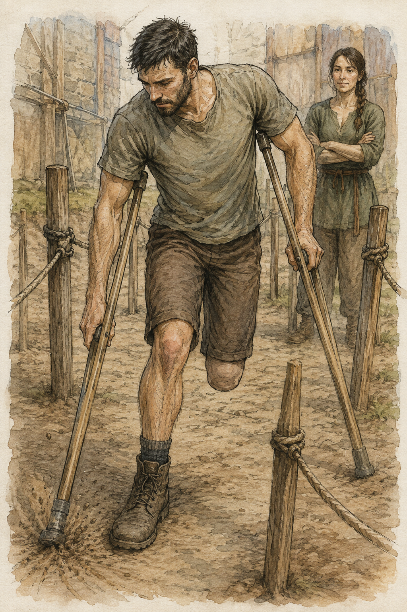

My hands were fine in the morning.
This was useful because Hessa had not asked me to spend the day proving they were fine.
She had asked me to live.
Apparently those were different activities.
My right calf had stopped complaining before breakfast. The residual limb was ordinary. My shoulders objected mildly to existence, which did not qualify as new information.
I went downstairs.
The keeper looked at my shirt.
Not green.
“Not theatre.”
“No.”
“Magic?”
“No.”
“Date?”
“No.”
He considered me.
“You've become difficult to classify.”
“I was unaware classification was included with rent.”
“It isn't. That's why I'm bad at it.”
I ate.
Then I went to find Pessa.
This was not because Hessa had said I could.
She had not.
She had said to ask Pessa.
That distinction annoyed me enough to remember it.
Pessa was in the yard behind the training hall, moving stakes.
Not training anyone.
Moving stakes.
There were six today.
I watched her pull one from packed dirt and drive it into another place with three blows from a wooden mallet.
“You changed them.”
“Yes.”
“Why?”
She looked at me.
I waited.
“Wrong question.”
“Are you going to tell me the right one?”
“No.”
Good morning.
I crossed the yard.
She looked at my hands before my face.
“Baseline?”
“Yes.”
“Leg?”
“Baseline.”
“Yesterday?”
“Theatre.”
“That wasn't the question.”
“Standing. Walking. Palms warm after. Right calf mildly tired. Quiet by morning. No injury.”
“Magic?”
“None.”
“Today?”
“None.”
She nodded once.
“What do you want?”
“To train.”
“That is not a movement.”
“I want to get better at moving.”
“That is worse.”
I looked at the six stakes.
“Whatever those are for.”
“They are for holding up laundry.”
“There is no laundry.”
“Then your theory has failed.”
I hated her.
Not significantly.
She picked up the mallet and walked toward the shed.
“Twenty minutes.”
I followed.
“No shield?”
“No.”
“We have established that.”
“Then stop asking.”
“I was checking whether the answer changed.”
“It didn't.”
She put the mallet away.
When she came back, she had a short length of rope.
Not a weapon.
Probably.
She tied it between two stakes at roughly knee height.
My right knee height.
The left side of my body supplied an opinion about the missing lower leg before I had even moved.
Not magic.
Body map.
Old geometry.
I looked at the rope.
“No.”
Pessa said it before I asked.
“I did not say anything.”
“You were going to ask if you step over it.”
“I was going to ask what it is for.”
“You don't step over it.”
“Good.”
She tied another rope between two different stakes, lower this time.
Then a third.
The yard became a bad drawing of a path that had been erased and redrawn several times.
There were openings.
Some wide.
Some narrow.
One route curved around the outside.
“What is the destination?”
Pessa pointed to the far wall.
A chalk mark.
“Touch it.”
“That seems simple.”
“Go.”
I went.
The direct route ended at the first rope.
I turned right.
The opening there was wide enough for the crutches if I angled.
Plant right crutch.
Left.
Right foot.
Move.
The second rope cut across the route.
I went left.
The third stake made the turn tighter than I wanted.
My left crutch landed too close to it.
Wood clicked against wood.
Not a catch.
Contact.
I corrected.
Reached the wall.
Touched chalk.
“Again,” Pessa said.
I turned.
“Same destination?”
“No.”
She pointed to a different mark near the shed.
I started.
Halfway there she moved.
Not the stake.
Herself.
She stepped into the opening I had chosen.
I stopped.
“You are in the way.”
“Yes.”
“Move.”
“No.”
I looked at the other route.
Longer.
I backed one crutch placement, turned, and took it.
“Too much,” she said.
“What?”
“Back.”
“There was no room.”
“There was enough.”
“For what?”
“Turn.”
“I did turn.”
“You retreated first.”
“One crutch.”
“One is not zero.”
I reached the mark.
“Again.”
“Are you going to block it?”
“Maybe.”
“Then I should choose the route you are less likely to block.”
“Why?”
“So I don't have to change.”
Pessa stared at me.
I heard it after I said it.
“That sounded bad.”
“It sounded like you.”
“Those are not mutually exclusive.”
She pointed to the first wall mark.
“Again.”
I went.
This time I chose the outside route.
Longer.
Clear.
Pessa did not block it.
I reached the mark.
“Again.”
“Same?”
“Yes.”
I took the outside route again.
She still did not block it.
Reached the mark.
“Again.”
I looked at her.
She looked bored.
I chose the inside route.
She moved into it.
I stopped.
The second route was behind me and to the right.
I started to back out.
“No.”
“I need space.”
“You have space.”
“Not enough.”
“Then stand there forever.”
Useful.
I planted both crutches.
Right foot centered.
The left side of my body wanted to put weight somewhere that did not exist.
I ignored the request.
Not elegantly.
I shifted the right crutch slightly outward.
Then the left.
Small.
Right foot pivot.
The turn was ugly.
But I did not back out.
I faced the second opening.
Pessa stepped away.
“You moved.”
“Yes.”
“Why?”
“You had another route.”
“That was the point?”
“No.”
Of course not.
I continued.
At the wall I touched chalk harder than necessary.
“Again.”
We did it four more times.
She blocked twice.
Once she did not block but rolled a wooden bucket into the route after I had committed.
I stopped before hitting it.
“That's cheating.”
“What rule?”
“There should be rules.”
“There are. Don't fall.”
“That is one rule.”
“Don't hit me.”
“Two.”
“Don't break anything.”
“Three.”
“Don't invent drill.”
“That is not a rule of movement.”
“It is in my yard.”
I went around the bucket.
On the next run I tried to anticipate the bucket.
There was no bucket.
I took a worse route because I had prepared for an obstacle that did not happen.
Pessa said nothing.
That was worse than correction.
At the wall, I turned.
“I know.”
“What?”
“I planned for the previous run.”
“Yes.”
“I shouldn't.”
She shrugged.
“That depends.”
“On what?”
“The next run.”
I waited.
Nothing.
“You are deliberately irritating.”
“Yes.”
Finally, something repeatable.
She pointed to the shed mark.
“Again.”
This time the route was clear.
I moved.
At the first opening, Pessa said, “Left.”
I went left.
Two placements later:
“Right.”
I stopped.
The right route was worse from where I was.
“Why?”
“Because I said.”
“That is not a reason.”
“Then don't.”
I went right.
Bad turn.
Crutch tip landed at an angle.
I felt it begin to slide on loose dirt.

I unloaded it immediately and caught more weight through the other crutch and right leg.
Not a fall.
Not graceful.
Pessa did not move to catch me.
Good.
I reset the tip.
“Again?” I asked.
“No.”
I looked at the wall.
“I didn't finish.”
“You nearly lost the crutch.”
“I corrected.”
“Yes.”
“Then why stop?”
“Because I saw it.”
“What?”
“The correction.”
I waited.
She walked to the patch of loose dirt and scraped it flat with her boot.
“You felt the tip go before you committed.”
“Yes.”
“Last time?”
“What last time?”
She pointed toward the stakes.
“Different day.”
Ch115.
The route change.
One decent stop without a catch or hop.
“You said it was a different day.”
“It was.”
“And today?”
“Also different.”
“That is not helpful.”
“It isn't supposed to be.”
She walked back.
“Again. Slower.”
I started again.
“Left.”
Left.
“Right.”
Right.
This time I did not argue.
Not because I trusted her.
Because arguing used time.
The turn still cost more than the left route.
But I made it without backing.
At the final opening she stepped into the lane.
I stopped.
Did not retreat.
Did not immediately turn either.
There was another opening two stakes behind my right shoulder.
I could get there.
Probably.
I shifted one crutch.
Pessa said, “No.”
I froze.
“What?”
“Stay.”
“For how long?”
She said nothing.
I stood.
This was stupid.
My palms were warming.
The right leg carried the center.
The phantom left foot felt planted half a step behind me.
It was not.
I knew it was not.
Knowing did not remove the sensation.
Pessa watched my shoulders.
Or hands.
Or feet.
Hard to tell.
Then she moved out of the lane.
“Go.”
I went straight.
Touched the mark.
“Why did you make me wait?”
“I wanted to see if waiting made you move.”
“That sentence is nonsense.”
“You move when you don't need to.”
I looked at her.
“When?”
“When you're trying to solve the next thing before it happens.”
That was dangerously close to sounding useful outside the yard.
I refused to allow it.
“In this yard.”
Pessa's mouth changed.
Barely.
“Yes. In this yard.”
Good.
We had rules.
Twenty minutes ended with me sitting on the low bench by the wall.
Palms hot.
Right calf working.
Residual limb still quiet.
Pessa untied the ropes.
I watched.
“You're not measuring anything?”
“I am.”
“Where?”
She tapped her forehead.
“That is unreliable.”
“So are you.”
“I could record the routes.”
“No.”
“Times.”
“No.”
“Number of corrections.”
“No.”
“Crutch contacts.”
“No.”
“Why not?”
She coiled the first rope.
“Because then tomorrow you'll arrive trying to improve the number.”
“That is the purpose of numbers.”
“Not mine.”
I considered arguing.
Theatre supplied an unwanted memory.
One run had been good.
I had tried to copy it.
The next had died.
I immediately became angry at my own brain.
No.
Pessa was not theatre.
This was not acting.
The similarity did not create a rule.
I looked at the dirt instead.
Pessa noticed.
“What?”
“Nothing.”
“Good.”
Everyone in Carrow had apparently formed a conspiracy around that word.
She finished coiling the rope.
“Next time?”
I asked.
“Maybe.”
“That is not scheduling.”
“No.”
“Hessa tomorrow morning.”
Pessa looked at me.
“I didn't ask.”
“I know.”
“Then why tell me?”
“So you know I may not come.”
“I know you may not come every day.”
There was no accusation in it.
No lesson either.
Just fact.
I leaned back against the wall.
Across the yard, someone I did not know came through carrying two practice spears.
Pessa pointed toward the rack without looking at him.
He put them away.
She had other work.
Of course.
I stood.
“Done?”
“Yes.”
“Any objection to walking?”
“Can you walk?”
“Yes.”
“Then why are you asking me?”
“I hate this arrangement.”
“No, you don't.”
That was annoyingly accurate.
I left.
At the Guild, I did not immediately look for work.
This was unusual enough that I noticed.
I bought food instead.
Sat.
Ate.
Someone at the next table argued about freight rates.
Two Bronze adventurers I recognized but did not know were comparing cuts on a leather vambrace.
A clerk carried three bundles from one desk to another and dropped one.
Nobody needed me.
I drank water.
My palms cooled.
Right calf remained tired but ordinary.
Theatre was west.
I knew approximately what time rehearsal usually started now.
That was dangerous information.
Not dangerous.
Available.
I could go.
Nobody expected me.
Teren did not care.
The woman had not asked.
The servant actor would presumably survive without being told I liked him again.
I stayed at the Guild.
Not as a demonstration.
I was tired.
That was sufficient.
A clerk eventually stopped beside my table.
“Gregory?”
“Yes.”
“There is a receipt comparison if you want it.”
“How long?”
“Maybe an hour.”
“Seated?”
“Yes.”
I looked at the papers under his arm.
Ordinary work.
Suitable.
Paid, presumably.
I could do it.
That did not create a reason to.
“Not today.”
“All right.”
He walked away.
No disappointment.
No argument.
No consequence I could see.
This remained one of the stranger discoveries of the last few weeks.
A thing could fit my current capacities and still not become mine.
I drank more water.
Across the room, the dropped bundle had been gathered. The freight argument had changed participants. Someone opened the front door and let in a stripe of afternoon light that crossed the floor and stopped under an empty chair.
I knew theatre was west.
I knew work had just been offered here.
I knew I could probably find Lyssa if I wanted to spend the effort.
I knew Jorren might appear or might not.
Too many available choices should have felt like wealth.
Mostly they felt like having six doors and no sign over any of them.
I did not need a sign.
Annoying.
I remained seated.
Not as a demonstration.
I was tired.
That was sufficient.
After a while Jorren appeared, saw me, and changed direction.
He had a folded paper in one hand.
“Alive?”
“Yes.”
“Disappointing.”
He sat opposite me.
“What happened to you?”
“Pessa.”
“That explains the face.”
“What face?”
“The one where you're arguing with someone who isn't here.”
“I am not.”
“Good.”
I hated that word.
He unfolded the paper.
Not mine.
Not my business.
I did not ask.
This was apparently a day of miracles without magic.
Jorren looked at me.
“What?”
“Nothing.”
“You're staring.”
“I am practicing not asking.”
“Why?”
“Don't ruin it.”
He laughed.
We sat.
For several minutes, neither of us improved.
Eventually he left because he had somewhere else to be.
I remained because I did not.
The afternoon moved.
At some point, I realized rehearsal had probably begun.
I did not go.
At some later point, I realized it was probably still happening.
I still did not go.
No ache opened in my chest.
No sense of lost destiny.
No fear they would forget me.
They might.
That seemed reasonable.
I had been there yesterday.
I might be there another day.
Or not.
The thought did not become smaller because I stayed away.
Neither did Pessa's yard.
Neither did Hessa tomorrow morning.
This was getting crowded.
I went home before my right calf became an argument.
The keeper was at the desk.
He looked at my shirt.
Still not green.
“Not theatre.”
“No.”
“Where?”
“Pessa.”
He nodded as though this restored the natural order.
“It does not.”
“What?”
“Nothing.”
Upstairs, I sat in the chair by the window.
I considered the notebook.
Movement session.
Routes.
Blocks.
Wait.
Crutch slip.
Correction.
There were things worth recording.
I opened it.
Then stopped.
Pessa had not forbidden me to record my own body.
She had forbidden me to turn her yard into a score before I understood what she was looking at.
Probably.
I wrote:
PALMS HOT AFTER TWENTY MINUTES. RIGHT CALF TIRED. NO RESIDUAL-LIMB CHANGE. NO HAND SYMPTOM.
Then:
ONE RIGHT CRUTCH TIP BEGAN TO SLIDE ON LOOSE DIRT. FELT IT BEFORE FULL LOAD. UNLOADED AND RESET. NO FALL.
I stared at the page.
I wanted columns.
I did not draw them.
Tomorrow morning belonged to Hessa.
Today had belonged to Pessa for twenty minutes.
The rest had mostly belonged to me.
I had done almost nothing with it.
That was not true.
I had eaten.
Sat.
Talked to Jorren.
Not gone to theatre.
Come home before tired became stupid.
Very poor résumé.
Good day.
Probably.